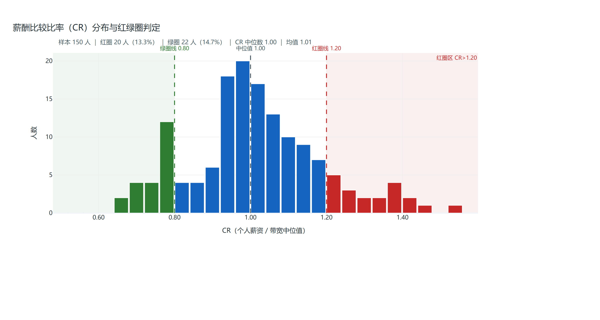
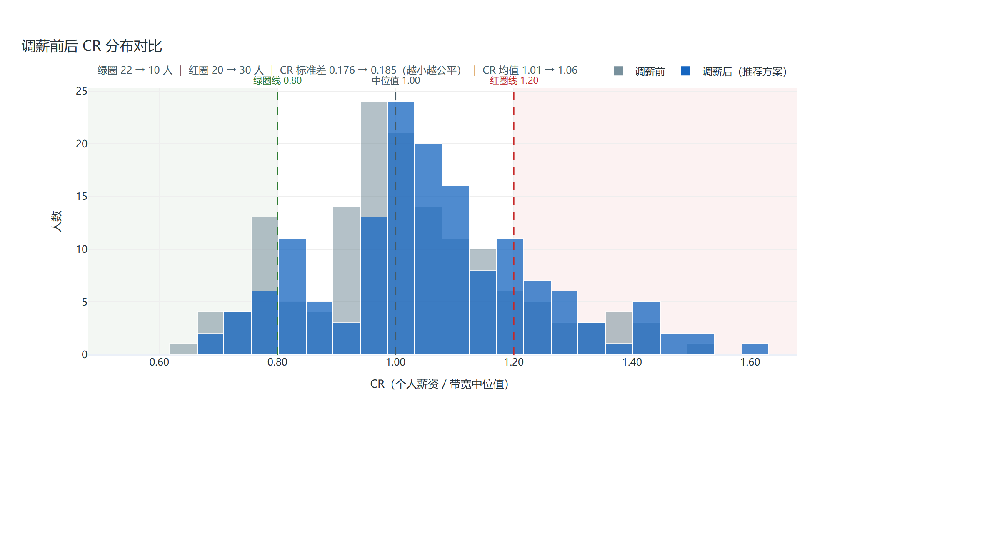
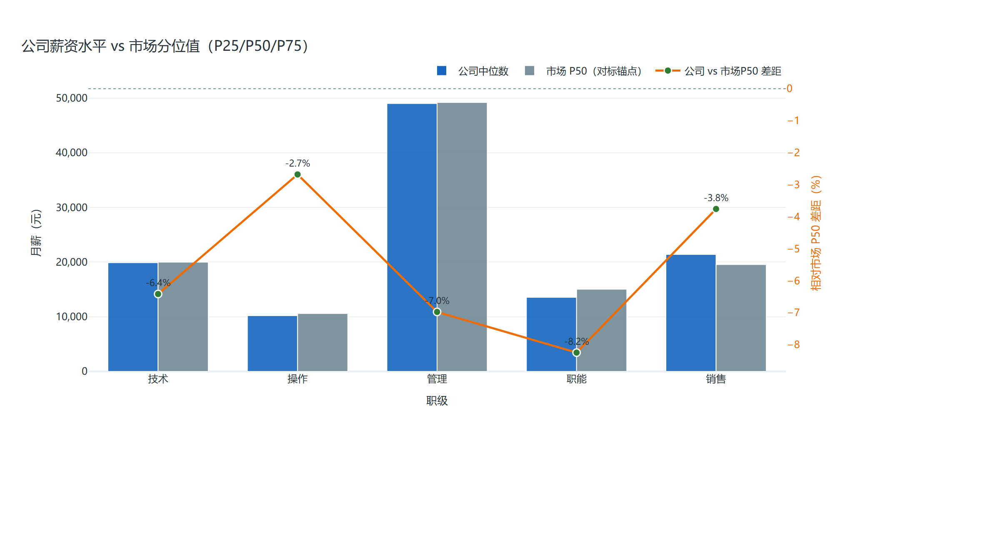
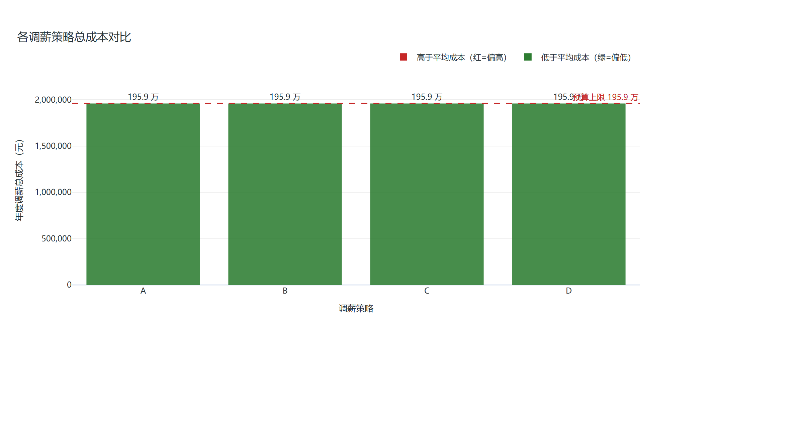

让大模型负责听懂人话、串起流程、把结果讲成人话；
所有跟钱有关的计算，一律交给一段确定性程序去算。




下面是内置合成样例数据（150 条，与任何真实自然人无关）跑出的结果，任何人跑同一条命令都会得到同一组数字：
| 输出项 | 结果 |
|---|---|
| 红圈（薪酬偏高） | 31 人 · 20.67% |
| 绿圈（薪酬偏低） | 26 人 · 17.33% |
| 带宽内合理 | 93 人 · 62.00% |
| 预算 5% 对应总额 | 1,958,520 元 |
| 优先补绿圈：第一步补差成本 | 472,889 元 / 26 人 |
这组数字同时是 CI 里的金标准对账用例——口径一改，测试立刻失败。这也是「可审计」的具体含义。
git clone https://github.com/helibeiqi/salary-diagnosis-cli.git cd salary-diagnosis-cli && pip install -r requirements.txt python run_agent.py --demo
report/。不需要配置模型，也不需要联网。同一套计算内核，三种接法任选，不绑定任何 AI 平台：
src/mcp_adapter.py，纯标准库）—— 任何 MCP 客户端可直接接入src/agents_adapter.py）—— 指向任意 OpenAI 兼容端点换前端、换模型都不改口径——因为模型本来就只负责调度与解读，不参与任何计算。